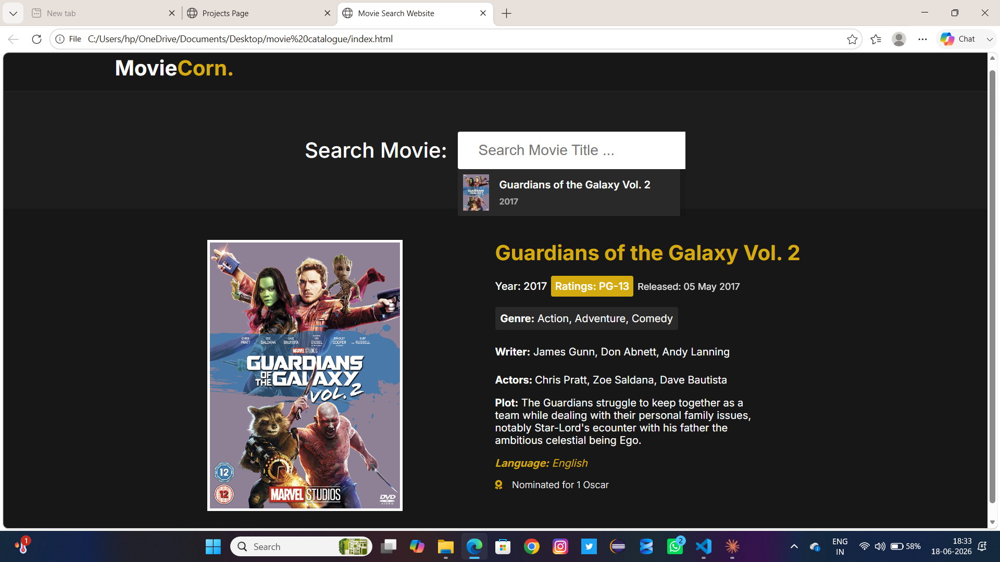
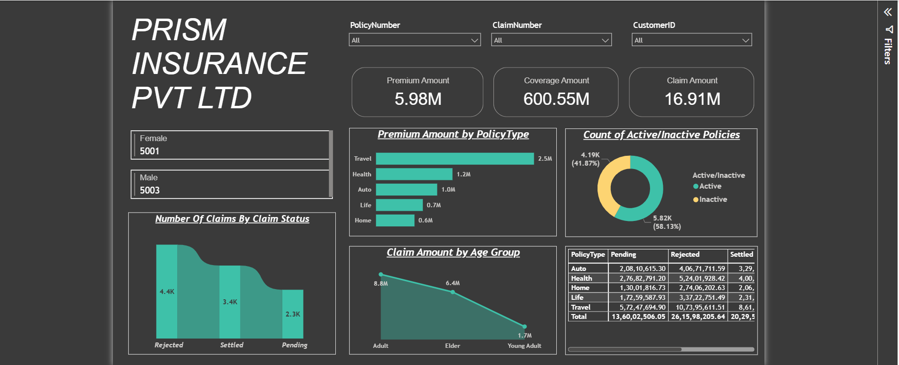

Hands-on experience building Excel/Power BI dashboards and web applications for ecommerce and insurance domains, combining software engineering with data analysis.

A web-based movie catalog that lets users browse a collection of movies, view details like genre and rating, and search or filter through the catalog.
Features:
Technologies Used: HTML, CSS, JavaScript.
Challenges: Designing a clean, responsive grid layout that stayed organized across different screen sizes.
Future Enhancements: Add a backend API for dynamic movie data and a user watchlist feature.

An insurance dashboard showing premium, claim, and coverage amounts across customers.
Features:
Technologies Used: Power BI.
Challenges: Cleaning and segmenting customer data to accurately reflect active vs inactive status.
Future Enhancements: Add claim trend forecasting and risk scoring by customer segment.
A responsive movie ticket booking site that allows users to browse movies, view showtimes, and select seats.
Features:
Technologies Used: HTML, CSS, JavaScript.
Challenges: Building reusable UI components and ensuring form validation handled edge cases correctly.
Future Enhancements: Add backend integration for real-time seat availability and online payments.